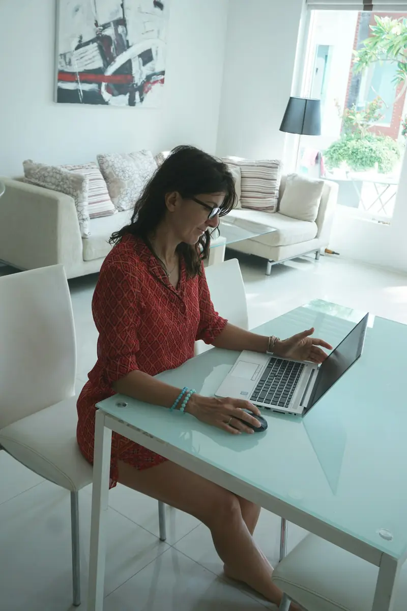
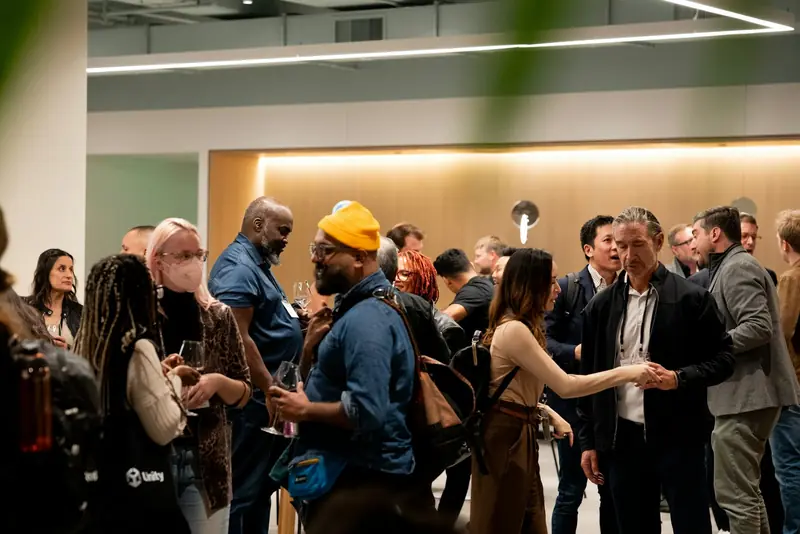
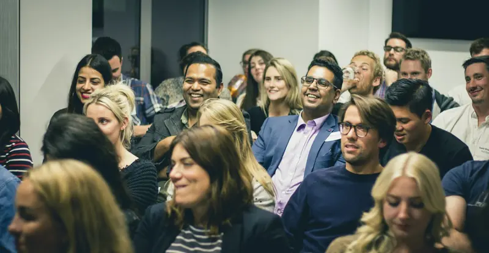
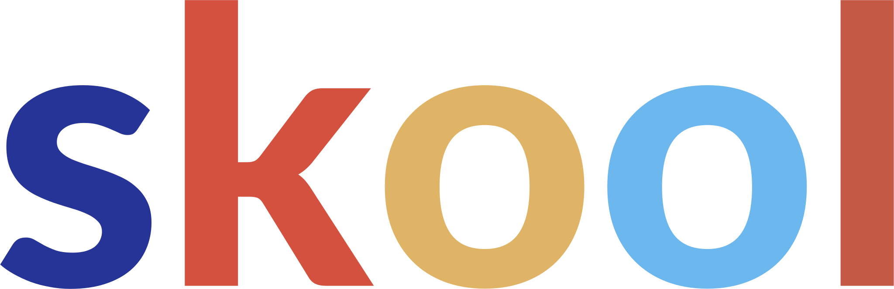
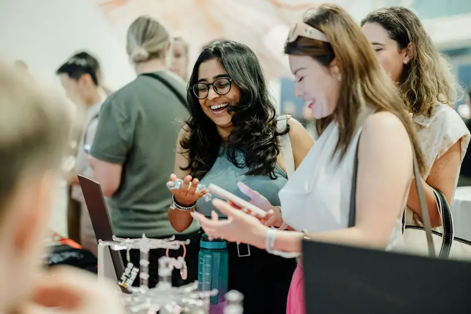
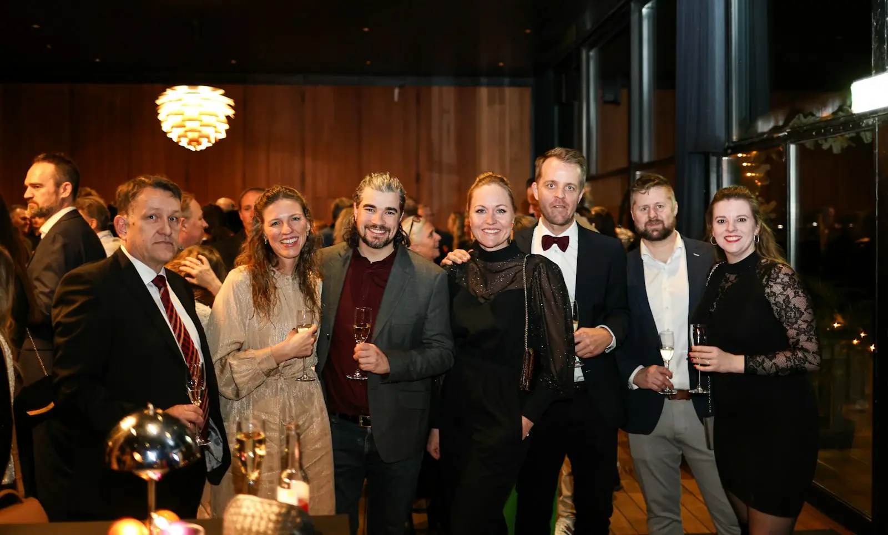

Te formás en la academia
Certificación 100% virtual en Skool, con clases en vivo, cápsulas y mentorías con coaches formados.
Certificación en Liderazgo Ontológico Organizacional, 100% virtual. Desde el primer día de cursada ya sos parte de la red: networking, mentorías con coaches formados y pasantías en empresas.
Casi 40 coachesya son parte de la red
Arrancamos el 15 de marzo100% virtual, clases en vivo
Y ahí empiezan las preguntas que nadie te responde.
En NP+ el sostén no espera al título. Arranca el primer día de cursada.
No es solo una certificación. Es la formación en coaching ontológico para acompañar a líderes y equipos dentro de las organizaciones, con toda la red sosteniéndote mientras aprendés.
Sesiones de coaching individuales y grupales dentro de una organización.
Ver qué hay detrás de un conflicto y diseñar la conversación que lo mueve.
Práctica en empresas, contactos y una comunidad que te sigue acompañando.
Tu inscripción a la academia te abre todo el camino del coach. Cada etapa, acompañada por la red de NP+.

Certificación 100% virtual en Skool, con clases en vivo, cápsulas y mentorías con coaches formados.
Networking junior: tu espacio entre estudiantes, donde las dudas se hablan libres y se aprende juntos.
Pasantías como observador en empresas asociadas mientras cursás. El punto más alto del recorrido: ejercer como coach adentro de una organización.

Networking presencial con casi 40 coaches de distintas profesiones. Ya van 10 encuentros en Buenos Aires.

Con las mesas de desarrollo dejás de mirar desde afuera: llevás el modelo a tu ciudad, con el sello de NP+.
Cada etapa termina con algo que ya sabés hacer.
Te llevás: tu primera sesión de coaching guiada
Te llevás: un mapa para destrabar conflictos
Te llevás: práctica como observador en una empresa
Te llevás: tu certificación y casos reales
La academia vive en Skool, la plataforma que usan miles de comunidades en el mundo. Clases, material, agenda y comunidad en una sola app, simple de usar.

Clases, cápsulas, agenda y comunidad en el mismo lugar. Nada de buscar links.
App para iPhone y Android, y también desde la compu.
[Día y horario a confirmar]. Si no podés conectarte, queda grabada.
Publicás, comentás y le preguntás a mentores y compañeros cuando lo necesitás.
Cápsulas cortas a tu ritmo, y ves tu progreso en cada etapa.
Notificaciones de clases nuevas, mentorías y respuestas.
Los fundadores de NP+. Coaches en actividad que acompañan a equipos y organizaciones todos los días.
Socio fundador
Coach Profesional Acreditado (CPA) por la CIC
Acompaño a organizaciones y personas a desplegar su potencial y su liderazgo. Con sesiones, talleres y conferencias fortalezco competencias, mejoro la productividad y el bienestar, y consolido equipos de alto rendimiento.
Socio fundador
Coach Ontológico y PNL
Transformo equipos operativos que dependen del control constante en sistemas de trabajo claros, con roles y conversaciones que funcionan.
En ocho meses armamos una red de coaches de distintas profesiones que se encuentra, se recomienda y trabaja junta. Acá el protagonista sos vos.

[Testimonio real de alguien del networking: qué cambió desde que se sumó. Dos o tres líneas, con sus palabras.]
Nacimos en Buenos Aires y crecemos con cada coach que se suma. La academia es 100% virtual, así que te formás desde cualquier provincia, y con las mesas de desarrollo la red llega a cada ciudad.
El Networking Junior está abierto a estudiantes de cualquier academia de coaching. Con una membresía tenés tu propio networking, mentorías con coaches formados y pasantías como observador en empresas.
Quiero sumarme al Networking JuniorEscribinos y te contamos todo. Te responde una persona del equipo, no un bot.
Inscripciones abiertas
La inversión y las formas de pago te las pasamos por mensaje directo, junto con el programa completo.
No, y desconfiá de quien lo prometa. Lo que sí te damos es práctica en empresas, mentorías y una red de contactos desde el primer día. La contratación la decide cada empresa.
Sí. Las clases son en vivo por Zoom y el material queda en la app de Skool. Los networking profesionales son presenciales en Buenos Aires y la idea es sumar otras provincias.
[Requisitos de ingreso a confirmar con la dirección.]
[Duración y horario a confirmar.] Si no podés conectarte a una clase, queda grabada.
[Formas de pago a confirmar.] Escribinos y te pasamos las opciones.
Seguís en la red. Pasás al networking presencial con coaches en actividad y podés armar tu propia mesa de desarrollo en tu ciudad, con el sello de NP+.
Sí. Podés sumarte al Networking Junior con una membresía: networking, mentorías con coaches formados y pasantías como observador en empresas, aunque no curses en NP+.

Formar más Sostener
Acá el protagonista sos vos. La próxima cohorte arranca el 15 de marzo: escribinos y te contamos todo en una charla corta.